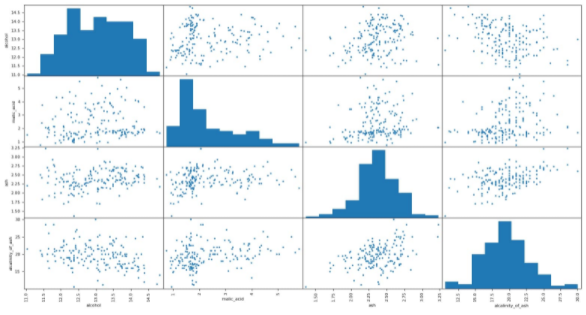
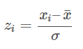

Principal Component Analysis for Dimensionality Reduction in Python
This article will focus on a walkthrough for principal component analysis in Python.
Table of Contents:- Introduction
- Principal component analysis (Overview)
- Principal component analysis in Python
- Conclusion
Introduction
One of the main reasons for writing this article became my obsession to know the details, logic, and mathematics behind Principal Component Analysis (PCA). Majority of the online tutorials and articles about principal component analysis in Python today focus on showing learners how to apply this technique and visualize the results, rather than starting from the very beginning as to why do we even need it in the first place? What is it with our data that we need to shrink the number of features or group them?
Let’s start from the beginning. What are you going to do with the dataset you have even if you don’t do any dimensionality reduction? I guess you are trying to feed it to a machine learning algorithm right?
So that’s our first step. Our goal is to have a algorithm-friendly dataset. What do we mean by that?
When you have a lot of features, there are a few potential drawbacks:- Your model will have a high degree of complexity
- They may cause a significant amount of noise
- If they have different scales, it reduces the performance of several algorithms that are scale-sensitive
- More complicated visualizations in n-Dimensional space
Here is where PCA comes into play. It will help us reduce the dimensionality of the dataset by extracting/eliminating the important/unimportant features.
Principal Component Analysis (Overview)
Principal component analysis (or PCA) is a linear technique for dimensionality reduction. Mathematically speaking, PCA uses orthogonal transformation of potentially correlated features into principal components that are linearly uncorrelated.
As a result, the sequence of n principal components is structured in a descending order by the amount of the variance in the original dataset they explain. What this essentially means is that the first principal component explains more variance then the second principal component and so on.
It is much better to put it into context of how principal components are calculated step by step:- Calculate the covariance matrix
- Calculate eigenvalues
- Calculate eigenvectors
- Sort eigenvectors according to eigenvalues in decreasing order
- Transform original data to k-dimensional using k eigenvectors
Note: as mentioned before, depending on the data you are working with and the scaling of features, you may want to standardize the data before running PCA on it.
Principal component analysis in Python
To continue following this tutorial we will need two Python libraries: pandas, numpy, sklearn, and matplotlib.
If you don’t have them installed, please open “Command Prompt” (on Windows) and install them using the following code:
pip install pandas
pip install numpy
pip install sklearn
pip install matplotlib
Import the required libraries:
import pandas as pd
import numpy as np
import matplotlib.pyplot as plt
from sklearn.datasets import load_wine
from sklearn.preprocessing import StandardScaler
from sklearn.decomposition import PCA
Once the libraries are downloaded, installed, and imported, we can proceed with Python code implementation.
Step 1: Loading the dataset
In this tutorial we will use the wine recognition dataset available as a part of sklearn library. This dataset contains 13 features and target being 3 classes of wine.
The description of the dataset is below:- Alcohol
- Malic acid
- Ash
- Alcalinity of ash
- Magnesium
- Total phenols
- Flavanoids
- Nonflavanoid phenols
- Proanthocyanins
- Color intensity
- Hue
- OD280/OD315 of diluted wines
- Proline
This dataset is particularly interesting to illustrate classification problems as well as it is great for our showcase of PCA application. It has enough features to see the true benefit of dimensionality reduction.
wine = load_wine()
df = pd.DataFrame(wine.data, columns=wine.feature_names)
print(df.iloc[:,0:4].head())
Data from sklearn, when imported (wine), appear as container objects for datasets. It is similar to a dictionary object. Then we convert it to a pandas dataframe and use the feature names as our column names.
Since we have 13 features, it will be very wide to show, so we take a look at the first 4 columns just to make sure that our code worked.
Step 2: Exploring the dataset
Now let’s take a look at the basic descriptive statistics of this dataframe. We will continue to just display the first 4 columns to save some space in the output.
print(df.iloc[:,0:4].describe())
Output:
alcohol malic_acid ash alcalinity_of_ash
count 178.000000 178.000000 178.000000 178.000000
mean 13.000618 2.336348 2.366517 19.494944
std 0.811827 1.117146 0.274344 3.339564
min 11.030000 0.740000 1.360000 10.600000
25% 12.362500 1.602500 2.210000 17.200000
50% 13.050000 1.865000 2.360000 19.500000
75% 13.677500 3.082500 2.557500 21.500000
max 14.830000 5.800000 3.230000 30.000000
Below is a scatter plot matrix for the 4 features we have been working with above. It is of a smaller size on the blog page so it doesn’t reduce the page load time. If you would like to explore it in depth, you can easily recreate it with a few parameter tweaks.
What you see in this scatterplot matrix is a visualization of the descriptive statistics output. We will use it to compare with the scaled data to show that the distribution and the spread of the values for each feature remained the same after standardization.
As we can see, the ranges of each feature are quite different, along with their means and variances. Our next step is to scale the data for each feature by subtracting its mean and dividing by its standard deviation for each value.
Step 3: Standardizing the dataset
PCA is mainly focused on features that maximize variance. In case of the current not scaled data, PCA will consider that feature 4 (‘alcalinity_of_ash’) dominates the maximum variance metric since its range is 5-10 times larger compared to features 1:3. Hence the resulting principal components can be very different from the standardized data. More detailed information about the importance of scaling for PCA is available here.
When it comes to scaling our data, we will apply the following standardization method:

df = StandardScaler().fit_transform(df)
df = pd.DataFrame(df,columns = wine.feature_names)
Output:
alcohol malic_acid ash alcalinity_of_ash
0 1.518613 -0.562250 0.232053 -1.169593
1 0.246290 -0.499413 -0.827996 -2.490847
2 0.196879 0.021231 1.109334 -0.268738
3 1.691550 -0.346811 0.487926 -0.809251
4 0.295700 0.227694 1.840403 0.451946
When we apply the StandatdScaler() to a dataframe, the resulting transformed object is an array, which we then convert back to a pandas dataframe object. We can see that the scale of the transformed features is more similar across features than in raw data.
To show what this implies, let’s take a look at the descriptive statistics of the scaled data.
print(df.iloc[:,0:4].describe())
Output:
alcohol malic_acid ash alcalinity_of_ash
count 1.780000e+02 1.780000e+02 1.780000e+02 1.780000e+02
mean 7.943708e-15 3.592632e-16 -4.066660e-15 -7.983626e-17
std 1.002821e+00 1.002821e+00 1.002821e+00 1.002821e+00
min -2.434235e+00 -1.432983e+00 -3.679162e+00 -2.671018e+00
25% -7.882448e-01 -6.587486e-01 -5.721225e-01 -6.891372e-01
50% 6.099988e-02 -4.231120e-01 -2.382132e-02 1.518295e-03
75% 8.361286e-01 6.697929e-01 6.981085e-01 6.020883e-01
max 2.259772e+00 3.109192e+00 3.156325e+00 3.154511e+00
Notice that in the scaled data the means of features are centered around 0 and variance is the unit variance.
The matrix scatterplot of the scaled data below visualizes the point mentioned above.
You can recreate it the same way as the scatter plot matrix before. What’s important is to compare the distributions on the features and the spread of the scaled values, notice that those are the same.
Note: if you have categorical data, you will need to label encode it before scaling.
Step 4: Apply principal component analysis in Python
After scaling our data, we are on track to the most interesting part of this tutorial. We will go ahead and apply PCA to the scaled dataset.
pca = PCA(n_components=2)
pca_model = pca.fit(df)
df_trans =pd.DataFrame(pca_model.transform(df), columns =['pca1', 'pca2'])
First, store the instance of sklearn PCA as pca with 2 components. The reason we chose specifically 2 is just for simplicity and presentation in this tutorial. Later in the article we will discuss how to find the number of optimal principal components.
pca_model stores the eigenvectors of the applied technique, which is used to transform the scaled dataset df into df_trans by reducing its shape from 13 original features to 2 features which are represented by principal components.
Below is the visualization of this dimensionality reduction (from 13-dimensional to 2-dimensional. Let’s take a look:
print(df_trans.head())
Output:
pca1 pca2
0 3.316751 -1.443463
1 2.209465 0.333393
2 2.516740 -1.031151
3 3.757066 -2.756372
4 1.008908 -0.869831
What we see above is our scaled 13-feature dataset transformed to 2-feature dataset where each feature is a principal component. What it does now is allows us to visualize a 13-dimensional dataset in a 2-dimensional space due to dimensionality reduction.
Visualizing the transformed data df_trans:
plt.scatter(df_trans['pca1'], df_trans['pca2'], alpha=0.8)
plt.xlabel('PCA 1')
plt.ylabel('PCA 2')
plt.show()